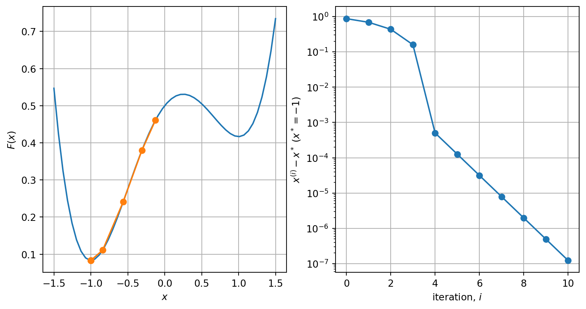
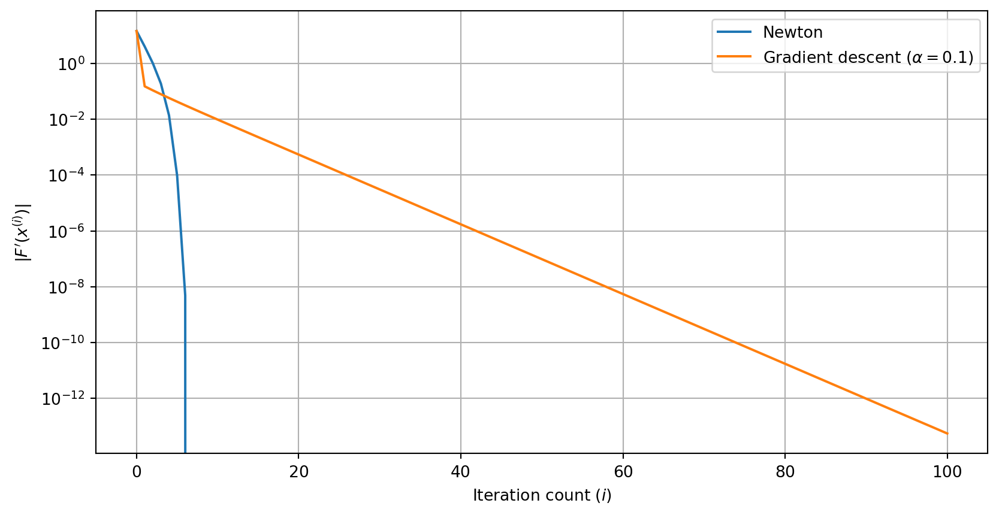

Define and apply the gradient descent algorithm for functions \(F \colon \mathbb{R}^n \to \mathbb{R}\)
Explain some of the properties of the gradient descent algorithm
The problem
We return to our basic optimisation problem. We want to find a minimiser \(x^*\) of the function \(F \colon \mathbb{R}^n \to \mathbb{R}\): \[
x^* = \mathop{\arg\min}\limits_{x \in \mathbb{R}^n} F(x).
\]
In this lecture, we are going to propose an iterative algorithm for approximating solutions called gradient descent.
Remark 1. The methods used to train neural network models are based on gradient descent. We will see an example of this later.
Example 1 Consider \[
F(x) = \frac{1}{4} x^4 - \frac{1}{12} x^3 - \frac{1}{2} x^2 + \frac{1}{4} x + \frac{1}{2}.
\] We will need the derivative of \(F\) given by: \[
F'(x) = x^3 - \frac{1}{4} x^2 - x + \frac{1}{4}.
\]
Continuing the iteration, we see that the sequence converges to the minimiser.
it
x
F(x)
0
-0.125000000000000
0.461161295572917
1
-0.309570312500000
0.379458835347502
2
-0.562542600091547
0.241007985998170
3
-0.840247650276027
0.110980417157527
4
-1.00050527085337
0.0833336525963882
5
-0.999873267361878
0.0833333534075803
6
-1.00003165706116
0.0833333345860796
7
-0.999992084106168
0.0833333334116595
8
-1.00000197887163
0.0833333333382282
9
-0.999999505275728
0.0833333333336392
10
-1.00000012368067
0.0833333333333524

We can use a similar idea when working in \(\mathbb{R}^n\). The key idea is to note that the gradient of \(F \colon \mathbb{R}^n \to \mathbb{R}\) points in the direction of the steepest increase in \(F\).
So, starting at a point \(\vec{x}^{(0)}\), if we want to reduce \(F\), we should take a small step in the direction \(-\nabla F(\vec{x}^{(0)})\). This is the gradient descent algorithm which, for a given step size \(\alpha\), uses the update formula: \[
\vec{x}^{(i+1)} = \vec{x}^{(i)} - \alpha \nabla F(\vec{x}^{(i)}) \quad\text{for}\quad i = 0, 1, 2, \ldots.
\]
Example 2 Consider the function \(F \colon \mathbb{R}^2 \to \mathbb{R}\) given by \[
F(x_1, x_2) = x_1^4 - x_1^2 + 2 x_1 + 4 x_2^2 + 2.
\]
Exercise 1 Take two steps of gradient descent starting at \(\vec{x}^{(0)} = (2, 0)\) for \(F \colon \mathbb{R}^2 \to \mathbb{R}\) given by \[
F(x_1, x_2) = 2 x_1^2 + 2 x_2^2 - 2 x_1 x_2,
\] using \(\alpha = \frac{1}{4}\).
Remark 2. We always need an initial value for the gradient descent algorithm. If \(F\) is convex, the choice of starting point does not affect whether we converge or not towards the global minimiser, although it does affect how many iterations are needed to reach it. In practice, a better initial guess usually leads to faster convergence.
However, in the non-convex case, different starting values converge to different local minima. In fact, this is a way to try to find a global minimum through using lots of different local minima and finding which one minimises \(F\).
Choice of the step size \(\alpha\)
The choice of step size has a major effect on the performance of gradient descent.
If \(\alpha\) is too small, we do not make enough progress towards the minimiser, but …
if \(\alpha\) is too large the iteration may overshoot the minimum and function value may increase
Exercise 2 What would the best step size be? What if we know the second derivative of \(F\) as well? (Hint: think of 1d first, then think how this might work in higher dimensions). More on this later!
Stopping criteria
There are several possible stopping criteria available, similar to those used for other iterative schemes:
Stop after a fixed number of iterations
Stop when things stop changing
Stop if the function values are too large
Relation to differential equations
Relate the gradient descent algorithm to the gradient flow differential equation
There is another important way to derive the gradient descent algorithm: via a differential equation, often called the gradient flow differential equation:
Find \(\vec{x}(t)\) such that \[
\vec{x}'(t) = - \nabla F(\vec{x}(t)) \quad\text{subject to}\quad \vec{x}(0) = \vec{x}^{(0)}.
\]
Now, if we apply Euler’s method to solve the gradient descent differential equation with step size \(h = \alpha\), we arrive at the scheme: \[
\vec{x}^{(i+1)} = \vec{x}^{(i)} - \alpha \nabla F(\vec{x}^{(i)}).
\] So Euler’s method applied to the gradient flow equation gives exactly the gradient descent algorithm!
Note there is no step size in the gradient flow differential equation: effectively, this is the case for \(\alpha \to 0\), and we see that \(\alpha\) is small enough for the function value to always decrease.
Remark. The idea to think of gradient descent as a numerical method to solve the gradient flow differential equation allows us to think of other ways to generalise gradient flow.
For example, one approach called the heavy ball method (or momentum approach), uses a numerical method to solve the differential equation: \[
\vec{x}''(t) + \mu \vec{x}'(t) = - \nabla F(\vec{x}(t)),
\] subject to appropriate initial conditions.
Newton’s method
Apply the Newton method to solve optimsation problems
In one dimension, we applied Newton’s method to find a root of \(F'\) which we hoped would be a minimiser. We can relate the gradient descent algorithm to Newton’s method for \(F'\): \[\begin{align*}
x^{(i+1)} &= x^{(i)} - \frac{F'(x^{(i)})}{F''(x^{(i)})} && \text{(Newton's method)} \\
x^{(i+1)} &= x^{(i)} - \alpha F'(x^{(i)}) && \text{(gradient descent)}.
\end{align*}\] We saw that Newton’s method seem to converge very quickly, even faster than gradient descent!
Example 4\[
F(x) = \frac{1}{4} x^4 - \frac{1}{12} x^3 - \frac{1}{2} x^2 + \frac{1}{4} x + \frac{1}{2}.
\]

This can also be made to work for problems in \(\mathbb{R}^n\) too. The idea is to replace division by the second derivative in one dimension with the solution of a linear system involving the Hessian in higher dimensions.